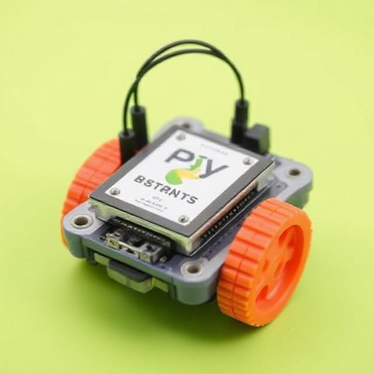
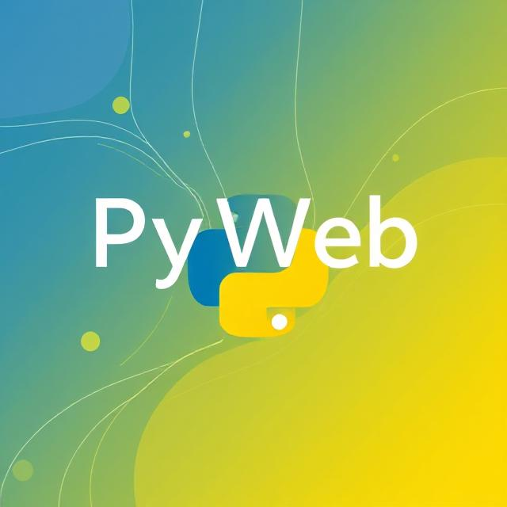

Prodotti |
|
PyData Analytics Suite: Una piattaforma completa per l'analisi dei dati, con strumenti di visualizzazione avanzata e modelli di machine learning integrati. |
|
PyCloud Integration: Servizi di integrazione per connettere applicazioni aziendali a piattaforme cloud, con supporto per AWS, Google Cloud e Microsoft Azure. |
|  |
PyBot Development Kit: Kit di sviluppo per la creazione di bot intelligenti, utilizzabili per il customer service o l'automazione delle risposte in tempo reale. |
|  |
PyWeb Framework: Un framework robusto per lo sviluppo di applicazioni web scalabili, sicure e ad alte prestazioni, ottimizzato per Python. |
|
PyAI Solutions: Soluzioni pronte per l'uso in ambito intelligenza artificiale, inclusi modelli pre-allenati per l'elaborazione del linguaggio naturale, il riconoscimento delle immagini e l'apprendimento automatico. |